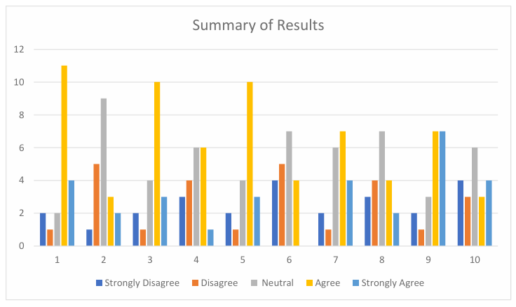

Summary of Usability Testing Results
The usability testing for the WalletPro Business Mode prototype utilized the System Usability Scale (SUS) to measure real-time tracking accuracy and user confidence. Overall, the data reveals a robust core architecture with specific friction points during the initial onboarding phase.

Key Issues Identified
Based on the survey responses and usability evaluation of the WalletPro Business Mode prototype, several issues were identified by participants:
1. Learning Difficulty for Some Users
Some respondents indicated that the system may still require assistance from a technical person, especially for beginners and older users. This suggests that certain features or workflows are not yet fully intuitive.
2. Complexity and User Familiarity
Although many users found the system manageable, the average score for system complexity remained moderate. This implies that some parts of the interface or transaction process may still feel overwhelming to first-time users.
3. Limited Advanced Financial Features
Respondents suggested additional tools such as budgeting functions, automatic expense tracking, cashback programs, and more detailed financial analytics. This indicates that the current version may lack comprehensive financial management capabilities.
4. Security and Verification Concerns
Several users emphasized the importance of stronger account verification and security measures, particularly because the application handles financial transactions.
5. Accessibility for Older or Less Experienced Users
Participants recommended making the system easier to access and learn, especially for users with limited digital wallet experience.
Discussion of Findings
In-depth discussion of why issues occurred and how they affect the user experience.
1. Users Found the System Useful and Practical
Most participants appreciated the transaction monitoring and financial record tracking capabilities. Features related to viewing income and expenses were frequently mentioned as beneficial.
2. Confidence in System Usage Was High
Respondents reported feeling relatively confident while using the system, indicating that the interface is understandable for many users.
3. The System Was Perceived as Integrated and Organized
Users noted that the functions within the application worked together effectively, helping improve transaction management efficiency.
4. Ease of Use Was Rated Positively
The majority of respondents agreed that the system was easy to use and could be learned quickly, especially by users already familiar with digital wallets.
5. Security Was Considered a Valuable Feature
Security and convenience were among the most appreciated aspects of the prototype, showing that users value safe and reliable financial applications.
Recommendations for Improvement
Actionable recommendations for improving the WalletPro prototype based on findings.
1. Simplify the User Interface
Reduce unnecessary complexity by improving navigation flow, minimizing clutter, and using clearer labels and instructions.
2. Add Financial Management Tools
Incorporate features such as budget planning, expense categorization, financial analytics and reports, automatic transaction summaries, and savings tracking.
3. Improve Accessibility and User Guidance
Provide onboarding tutorials, tooltips, walkthroughs, and beginner-friendly instructions to assist less experienced users.
4. Strengthen Security Features
Implement stronger verification methods such as multi-factor authentication, ID verification, biometric login, and fraud detection alerts.
5. Introduce Incentive Programs
Cashback promotions, rewards systems, and loyalty programs may encourage more active and frequent usage.
Suggested Design Improvements
To enhance both usability and visual experience, the following design improvements are recommended:
1. Cleaner Dashboard Layout
Use card-based sections for income, expenses, and transaction history. Reduce overcrowding by grouping related functions together.
2. Improved Navigation
Add a fixed bottom navigation bar or sidebar for quick access. Use recognizable icons paired with text labels.
3. Better Visual Hierarchy
Highlight important financial data using larger fonts and spacing. Use consistent typography and button styles throughout the application.
4. Responsive and Mobile-Friendly Design
Ensure the interface adapts properly to smartphones, tablets, and desktops. Optimize button sizes and spacing for touch interaction.
5. Beginner-Friendly Interface
Include onboarding screens and guided tutorials. Add contextual help buttons or FAQs within important sections.
6. Enhanced Transaction Visualization
Add charts and graphs for: Spending trends, Income summaries, Budget progress, Monthly reports.
7. Security Feedback Indicators
Display security confirmations, verification status, and successful transaction notifications clearly to improve user trust.
Heuristic Evaluation Workbook (PDF)
Attach the completed Heuristic Evaluation Workbook PDF below.